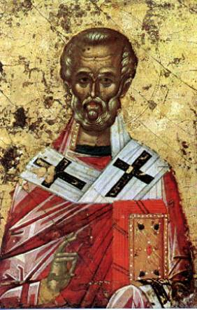

The Translation of St. Nicholas
(Greek Anonymous Account, 13th Century
Manuscript – Part 1)
“When Alexius was Emperor, and the foreign and infidel hordes that had migrated through the Roman Empire were being pacified and the bold Normans who had voyaged thither had been beaten and dispersed, certain citizens of the city of Bari, moved by a divine inspiration, purposed to sail in their merchant ships to Antioch, a city situated in Coele, in Syria. This they undertook not for selfish profit, but for a laudable and praiseworthy work – a work worthy of mention, O the marvel of it! For it delights my heart and what I have to say will soar aloft on lightsome wing. For they had the intention – and bless them for their prudence, bless them for their good choice! – instead of pursuing mercantile and selfish interests, to cast anchor at Myra and remove the manna-receiving and fragrant remains of our blessed, thrice-happy and inspired Father, and so, this accomplished, to possess and take pride in him as in a great fortune and inseparable treasure. Now, this was, as a matter of fact, the purpose of our Venetian brothers also, even though the deed had been accomplished by the men of Bari. For blessed is not he who begins a thing and does not finish it, but blessed is he who says and does and accomplishes good. In such wise it was, then, that they who heard of the plan of the Venetians were the first to attain the favor. For though the Venetians were bent on taking that goodly treasure and bringing it back to their homeland, the good God did not allow it so to be accomplished, but their plan and its fulfillment was given to the men of Bari, while the conception of the Venetians developed unaccomplished and unactuated.
“Disembarking, then, at Myra, these privileged
mariners, after approaching the sacred and holy grave of the Blessed, and after
bowing down with great humility, as was meet, they made an act of reverence.
Then, after they found monks watching beside the holy grave of the Blessed,
they requested them to make known to them where the Saint’s body lay. The
monks, thinking that they had made the request in order to reverence the body,
with sincerity and kindheartedness complied with their desire and showed them
the place where the body of the holy prelate was. The monks afterwards
questioned them somewhat sharply. ‘Why, you men, do you make such a request?
You haven’t planned to carry off the remains of the holy Saint from here? You
don’t intend to remove it to your own region? If that is your purpose, then let
it be clearly known to you that you parley with unyielding men, even if it
means our death. For we have rid ourselves of all fear. We won’t allow this to
be done, we are not going to take after the Iscariot who became a traitor to
his own Savior and Master. Away with any such thoughts! But in truth how can we
be unthinking traitors to our own guardian, to our protector, our champion, our
intercessor? How can we show ourselves as not submissive, but disobedient
servants of our benefactor, our patron and our father?’
“They then who made their request humbly enough as
reasonable men, made reply to the monks in humility: ‘Why surely indeed we
admit to you that for no other purpose did we disembark here than to take the
holy remains of our inspired Father. We beg you, then, for your acquiescence,
to be our helpers in this, and let not our efforts be in vain.’ And the monks
replied: ‘The Saint truly will not allow this to come to pass, and he will not
consent to have his body touched. But if you would listen to our advice, make
off from these parts with all speed, before the townspeople hear of what is
going on and put you to death.’
“The men that made this request, then, seeing that
they had answered in bitterness of heart, changed their tactics accordingly as
it is written elsewhere: ‘The best course to be pursued is the one that is the
least obnoxious,’ and they said: ‘Look you, that we have not disembarked here
of our own will, but we have been sent by the Pope of Rome and by the
Archbishops and Bishops and authorities at Rome associated with him and the
whole Council. For all of these arrived in our city of Bari with a large host
and the diverse armies of the West, enjoining on us to accomplish this work,
and bring back to the Pope the remains of the Saint without fail. Why even the
Saint himself, appearing in a vision to the Pope bade him do this with all
haste. And you if you want, accept suitable recompense from us, that we may
depart in peace and benevolence.’
“After saying this to the monks, when they saw that
these persisted the more in grief and tears and regarded their words as of no
account, they forced their way into the miraculous tomb. The watchers seeing
this unexpected turn of events and overcome with fear and trembling, rent their
garments and pulled at their hair and beards, bewailing their misfortune
piteously, and made as if to inform the citizens of the happening. And when the
men of Bari perceived this, they put guards at the entrances and exits of the
holy church and, overpowering the monks, took counsel how they could open the
holy tomb of the Blessed. And one of them whose name was Lupus, a priest
holding a glass vial filled with the prelate’s sacred oils, when he saw that
his comrades were in distress, let it fall from his hands and heard it crash
upon the stones; and he and his companions turned toward the vial and
discovered it to be intact. Wherefore they offered fitting praises to God and
to His servant and acknowledged with full accord that the will of God and of
the Saint acquiesced in the removal of his remains from there, for the visitors
now had full assurance that the Saint was escorting them, and saying: ‘Here is the tomb in which I lie; take me
then, and depart; for the people of Bari are to be forever protected by my
intercession.’

“One of them, whose
name was Matthew, carried away with desire and devotion, and bent on carrying
off the sacred remains of the Blessed, rushed upon one of the monks with a
sword, saying: ‘Either show us whether this is the venerable tomb of the Saint
for whose sake we have come, or I shall dispatch you with my sword,’ and he
seized him with his hand and brandished his sword before him. And one of the
monks made answer to Matthew: ‘Why my child, do you assail your brother
unjustly? Be assured, then, that this is the sacred and venerable tomb of the
Blessed from which the sacred oil wells up. Many kings and potentates, too,
especially the rich, have attempted to do this and have been desirous of
carrying off the remains of the Saint; but they were not able, for God and the
Saint did not allow them. But now, however, I am much afraid that the words of
learning pronounced by our holy Father are now indeed about to be fulfilled in
you, when he said that he would be carried off to a foreign land and well apart
from us.’ And the men of Bari, hearing this, questioned the monk with all
diligence. ‘How might you tell us of this vision?’”
Thought to Ponder:
Thought to Discuss around the Dinner Table:
The Translation of St. Nicholas – Part 1
(Greek Anonymous Account, 13th Century
Manuscript – Part 1)